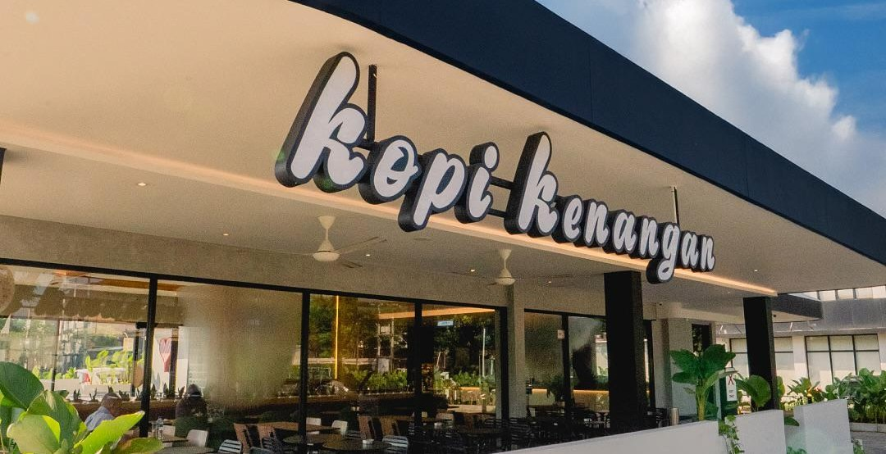
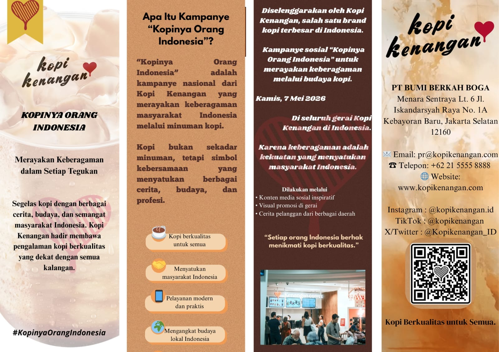
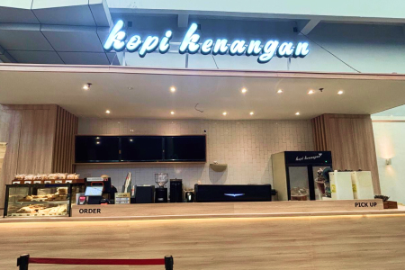
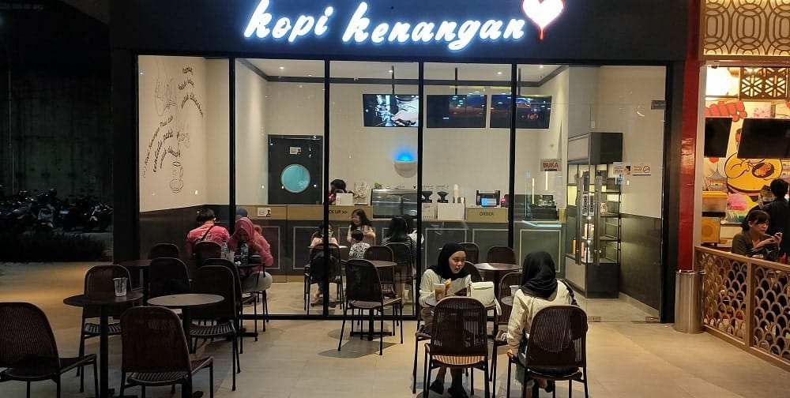

Kopi Kenangan hadir membawa pengalaman kopi berkualitas tinggi yang dekat dengan seluruh lapisan masyarakat Indonesia.
Baca Berita TerbaruTahun Berdiri
Cerita / Outlet
Kopi Lokal Pilihan
Konsep Bisnis Pionir
PT Bumi Berkah Boga (Kopi Kenangan) merupakan salah satu perusahaan ritel kopi dengan pertumbuhan tercepat di Asia Tenggara.
Menjadi jaringan kopi terbesar di Indonesia dan merambah pasar global melalui produk berkualitas tinggi namun tetap terjangkau bagi konsumen.
Menyediakan kopi berkualitas terbaik secara konsisten dengan memanfaatkan integrasi teknologi cerdas demi efisiensi layanan pelanggan (grab-and-go).
Food & Beverage (F&B), khususnya spesialisasi pada komoditas ritel kopi kontemporer berbasis teknologi aplikasi.
Ikuti perkembangan ekspansi pasar internasional dan inovasi terbaru PT Bumi Berkah Boga.

PT Bumi Berkah Boga (Kopi Kenangan), perusahaan ritel kopi berkonsep grab-and-go yang berstatus unicorn, resmi meluncurkan kampanye nasional bertajuk "Kopinya Orang Indonesia" pada 7 Mei 2026 di Jakarta. Kampanye ini bertujuan untuk merayakan semangat keberagaman masyarakat Indonesia sekaligus membangun kedekatan emosional yang lebih dalam dengan pelanggan dari berbagai latar belakang profesi serta daerah. Dalam pelaksanaannya, Kopi Kenangan menampilkan visual dan cerita pelanggan yang beragam serta tetap mengandalkan model layanan grab-and-go yang didukung teknologi untuk melayani pelanggan dengan mobilitas tinggi. Melalui inisiatif yang diaktivasi lewat media sosial dan materi visual di seluruh gerai ini, Kopi Kenangan ingin menegaskan bahwa kopi adalah bahasa universal yang menyatukan masyarakat sekaligus memperkuat posisi mereka sebagai pemimpin di industri Food & Beverage (F&B).
Kampanye nasional bertajuk “Kopinya Orang Indonesia" untuk merayakan keberagaman masyarakat Indonesia melalui kopi.
Diselenggarakan oleh PT Bumi Berkah Boga (Kopi Kenangan).
Kamis, 7 Mei 2026
Seluruh gerai Kopi Kenangan di Indonesia
Kopi Kenangan percaya bahwa keberagaman adalah kekuatan utama Indonesia, yang dapat menyatukan masyarakat melalui budaya minum kopi.
Kampanye dilakukan melalui :
- Pembuatan konten di media sosial
- Promosi di seluruh gerai
- Penggunaan teknologi layanan grab-and-go


